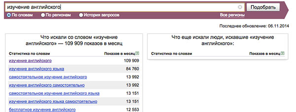

Зачем?
1 Низкая цена одно клика (0.5 - 5 рублей )
Большой объем созданных объявлений (до 10000 штук) позволяет минимизировать затраты на показ объявлений. Закон больших чисел работает на вас - яндекс хотя бы по несколько раз, но покажет каждое из ваших объявления, несмотря на то, что вы назначили низкую цену за клик.
2 Простота создания большого количества объявлений
Человеческое воображение не безгранично - придумать даже 100 объявлений не так уж просто. А придумать 10 фраз для рекламных текстов и еще 10 эмоциональных приставок не так уж сложно. Затем остается выбрать 100 ключевиков и получаем 10000 объявлений (10x10x100)
3 Маркетинговое исследование
За счет автоматической генерации множества самых разнообразных вариантов объявлений производится широкий охват целевой аудитории. В дальнейшем это обеспечивает аналитическую информацию об актуальных интересах аудитории. А также позволяет выявить наиболее эффективные рекламные слоганы.
Как?
Шаг 1 - Подбор ключевиков
Заходим на сервис подбора ключевых слов и выбираем запросы, которые соответствуют интересующей целевой аудитории.
Шаг 2 - Заполняем excel файл
Скачиваем образец файла и заносим в него ключевые слова, найденные на предыдущем шаге.
Инструкция по заполнению файла
Общий принцип формирования объявления при данном подходе:
- Заголовок = ключевик + эмоциональная приставка
- Текст = ключевик + текст объявления
Ограничения по длине: заголовок - 33 символа, текст обяъвления - 75 символов. При составлении текстов объявлений имеет смысл учитывать этот факт, иначе объявление не будет принято яндексом.
В файле на листе "Ключевики" в колонку "А" заносим ключевик, который предлагает сервис яндекса по подбору слов. В колонку "B" либо дублируем этот ключевик, либо пишем более сокращенный вариант. Это делается для того чтобы в случае слишком длинного ключевика, например "как выучить английский язык онлайн", заменить его в тексте объявления более коротким аналогом, например "английский онлайн".
На листе "Объявления" в колонку "А" заносим тексты объявлений. Помним что полный текст объявления формируется по формуле ключевик + текст объявления. В примере с ключевиком "английский онлайн", если мы напишем в колонку "А" текст "Эффективное и быстрое обучение!", то финальный текст обяъвления будет таким "Английский онлайн. Эффективное и быстрое обучение!"
На листе "Эмо" в колонку "А" заносим эмоцинальные мотивирующие приставки ("Супер!", "Жми!", "Скидки!" и т.д.)
Шаг 3 - Создаем учетную запись на яндекс директ
Либо высылаем пароль доступа вместе с файлом, либо самостоятельно создаем токен и высылаем токен. С учетом дневного лимита загрузки (2000-2600 объявлений) сформированные обяъвления начинают загружаться на указанный аккаунт. Далее засылаем деньги на яндекс, отправляем загруженные объявления на модерацию и после успешного прохождения модерации устанавливаем цену за клик для кампании.